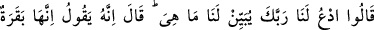
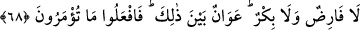
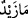
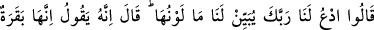

itâatinden dolayı bu genci mükâfâtlandırmış oldu.
Boğazlanacak hayvanın özellikle inek olmasının hikmetine gelince: “Küfürleri
sebebiyle kalblerine buzağı sevgisi sindirilmişti.” (el-Bakara, 2/93) âyetinden de
anlaşıldığı üzere onlar daha önce inek ve buzağılara tapıyorlardı. Sonra bundan tevbe
edip Allah’a yöneldiler. Hak Teâlâ, onların tevbelerinde sâdık olup olmadıklarını
denemek ve kalblerinden bu inek sevgisini çıkarmak için onlara başka bir hayvan değil
de sadece inek kesmelerini emretti.
Yine o gün en iyi kurbanın “inek” olduğu ve onların en iyi şekilde Allah’a
yakınlaşmaları için inek kesmeleri emredildiği de söylenmiştir.
“İsrâîloğulları, Allah’ın emrine uydular mı? Bundan sonra ne yaptılar?” denirse âyet
onların durumunu şöyle anlatmaktadır:
68. “Bizim adımıza Rabbine duâ et, bize onun ne olduğunu açıklasın” dediler.
Mûsâ: Allah diyor ki: “O, ne yaşlı ne de körpe; ikisi arasında bir inek.” Size
emredileni hemen yapın, dedi.
“Rabbin sorumuza cevap versin” dediler. Çünkü onlar ölü bir ineğin bir parçasıyla
bir ölünün diriltilebileceğini daha önce bilmiyorlardı. Bunu işitince ineğin vasıflarını
sormaya başladılar.
Birisi hakkında “O nedir?” diye sorulduğunda “nedir?” sorusundan maksad “onun
sıfatları, hâli nasıldır?” demektir. Meselâ (
) “Zeyd nedir?” demek, “İşi nedir, hangi
vasıflara sâhibtir?” demektir. Cevap da: “O, doktordur, alîmdir” şeklinde olacaktır.
İsrâîloğulları bu sorularıyla, “ineğin vasfını, yaşını; büyük mü, küçük mü?” olduğunu
öğrenmek istemişlerdir.
Mûsâ (a.s.), Rabbine duâ edip kendisine vahiyle cevap verilince şöyle demiştir:
“Rabbimiz, kesilmesini emrettiği ineğin, ne yaşlı, ne de çok küçük olmaması gerektiğini
söylüyor. Size emredileni yapın, orta yaşlı böyle bir ineği kesin.” Böylece Hz. Mûsâ,
daha önce zikredilen ineği, ayrıntılarıyla bildirmiştir. Âyette geçen “fârıd” (yaşlı)
kelimesi, kesmek mânâsına olan “farz” kökünden alınmıştır. Sanki hayvanın yaşı
kesilmiş, ömrünün sonuna ulaşmış, demektir.
“Bu ikinci açıklamadan ve tekrârlanan emirden sonra, İsrâîloğulları ne yaptılar?” diye
sorulursa, müteâkib âyet, şöyle cevap veriyor: